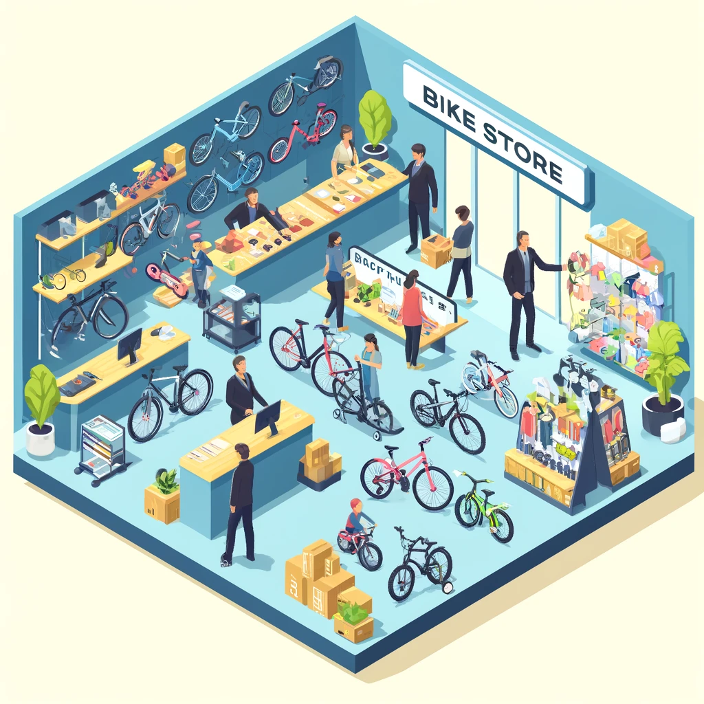

Oefeningen DDL - Fietsenwinkel
De fietsenwinkel

Algemene informatie
Algemene info over dit database schema kan je hier vinden.

DDL
Oefening 1
De database is reeds gecreëerd volgens de aangegeven schema’s in de figuur. Maak jezelf klant in de database (INSERT statement) door een fiets te kopen (althans door dit in de databank toe te voegen).
Oefening 2
Which state has the most customers?
SELECT state, COUNT (customer_id) as nb_customer FROM customers GROUP BY state ORDER BY nb_customer DESC
Oefening 3
Which brand has the most products in the store?
SELECT COUNT(products.product_id) as product_per_brand, brands.brand_name FROM production.brands
JOIN production.products ON products.brand_id = brands.brand_id
GROUP BY brands.brand_id, brands.brand_name ORDER BY product_per_brand DESC
Oefening 4
Which product is the most ordered? Give me product_id, quantity and product_name
SELECT TOP 10 b.product_id, SUM(a.quantity) as quantity, b.product_name FROM sales.order_items a
JOIN production.products b ON a.product_id = b.product_id
GROUP BY b.product_id, b.product_name ORDER BY quantity DESC
TotalQuantityOrdered = SUM(order_items[quantity])
Oefening 5
Which product is sold out in each store?
SELECT stores.store_name, stocks.product_id, products.product_name FROM production.stocks
JOIN production.products ON stocks.product_id = products.product_id
JOIN sales.stores ON stocks.store_id = stores.store_id
WHERE quantity = 0
Oefening 6
Which product is the most ordered?
WITH price AS (
SELECT product_id, quantity, list_price, discount, list_price * quantity * (1 - discount) AS final
FROM sales.order_items
)
SELECT a.product_id, a.product_name, SUM(b.final) AS sales_revenue
FROM price b
JOIN production.products a
ON a.product_id = b.product_id
GROUP BY a.product_id, a.product_name
ORDER BY sales_revenue DESC;
Oefening 7
Calculate the average bike price for each model year
SELECT model_year, AVG(list_price) AS avg_price FROM production.products GROUP BY model_year
Oefening 8
How many staffs are active in all stores?
Oefening 9
Which store has the most late-shipped orders?
select s.store_name, count(*) as aantal_late_shipped_orders
from sales.orders o join sales.stores s on o.store_id = s.store_id
where o.shipped_date > o.required_date
group by s.store_name
order by aantal_late_shipped_orders desc;
WITH status AS (SELECT order_id, required_date, shipped_date,
CASE
WHEN required_date <= shipped_date THEN 0
ELSE 1
END AS late_shipping, store_id
FROM orders
WHERE shipped_date IS NOT NULL AND late_shipping = 1)
SELECT store_id, COUNT(late_shipping) as nb_late_shipping
FROM status GROUP BY store_id
Oefening 10
Which product is the most ordered?
SELECT
YEAR(o.order_date) AS order_year,
FORMAT(o.order_date, ‘MM’) AS order_month,
p.category_id,
c.category_name,
AVG(oi.quantity * oi.list_price * (1 - oi.discount)) AS avg_monthly_sales
FROM
sales.order_items oi
JOIN
production.products p ON oi.product_id = p.product_id
JOIN
sales.orders o ON oi.order_id = o.order_id
JOIN
production.categories c ON c.category_id = p.category_id
GROUP BY
YEAR(o.order_date) AS order_year,
FORMAT(o.order_date, ‘MM’),
p.category_id,
c.category_name
ORDER BY order_year,order_month;
Oefening 11
Percentage of late shipments per store. Give store_id, total_late, total, percentage_late.
WITH late AS(SELECT store_id,
CASE
WHEN required_date <= shipped_date THEN 0
ELSE 1
END AS late_shipping FROM sales.orders WHERE shipped_date IS NOT NULL)
SELECT store_id, SUM(late_shipping) AS late, COUNT(late_shipping) AS total, CAST(100*SUM(late_shipping)/COUNT(late_shipping) AS FLOAT) AS percent_late_shipping
FROM late GROUP BY store_id